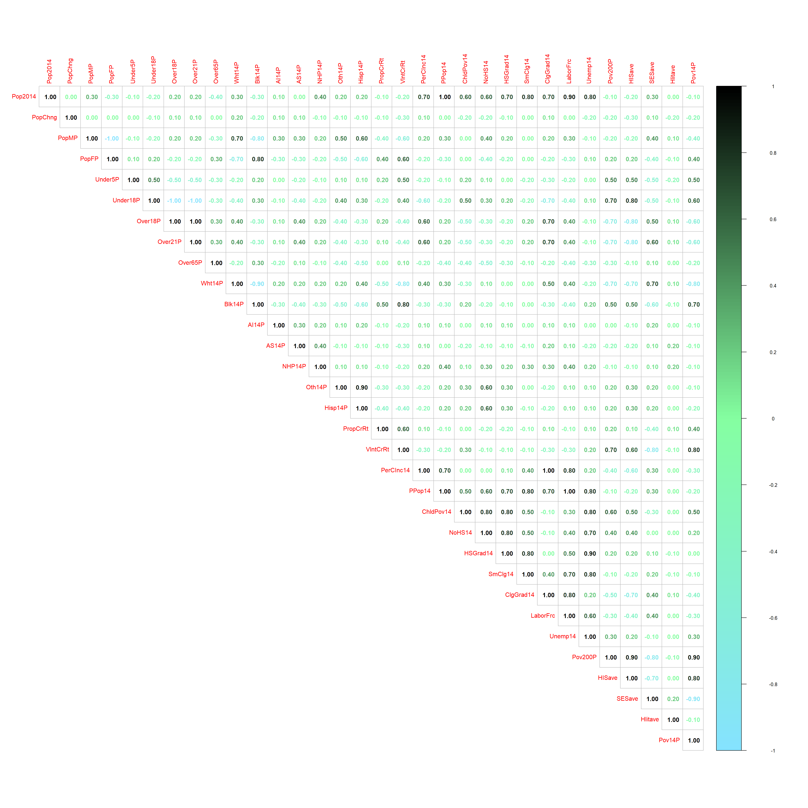
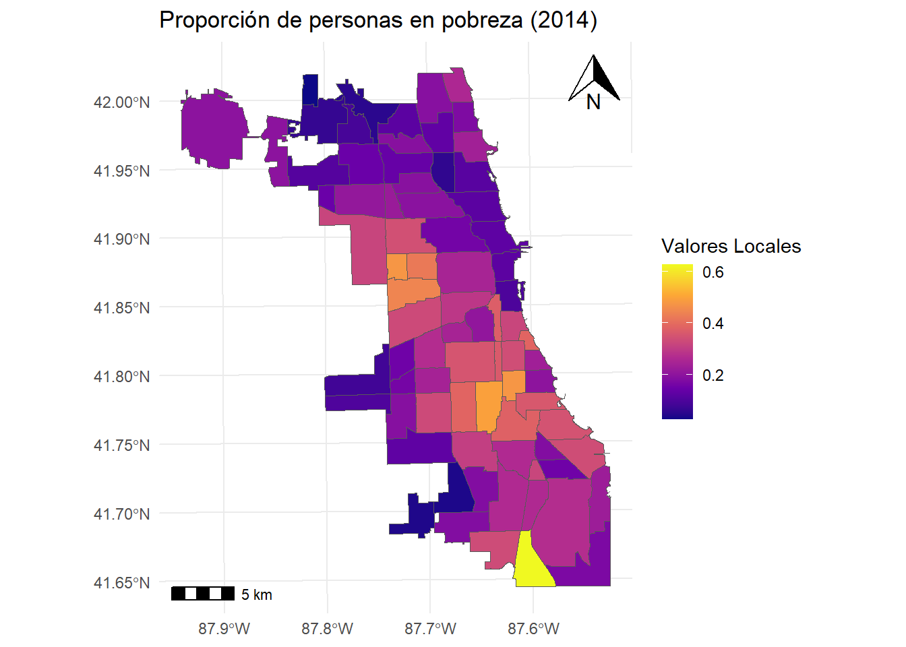
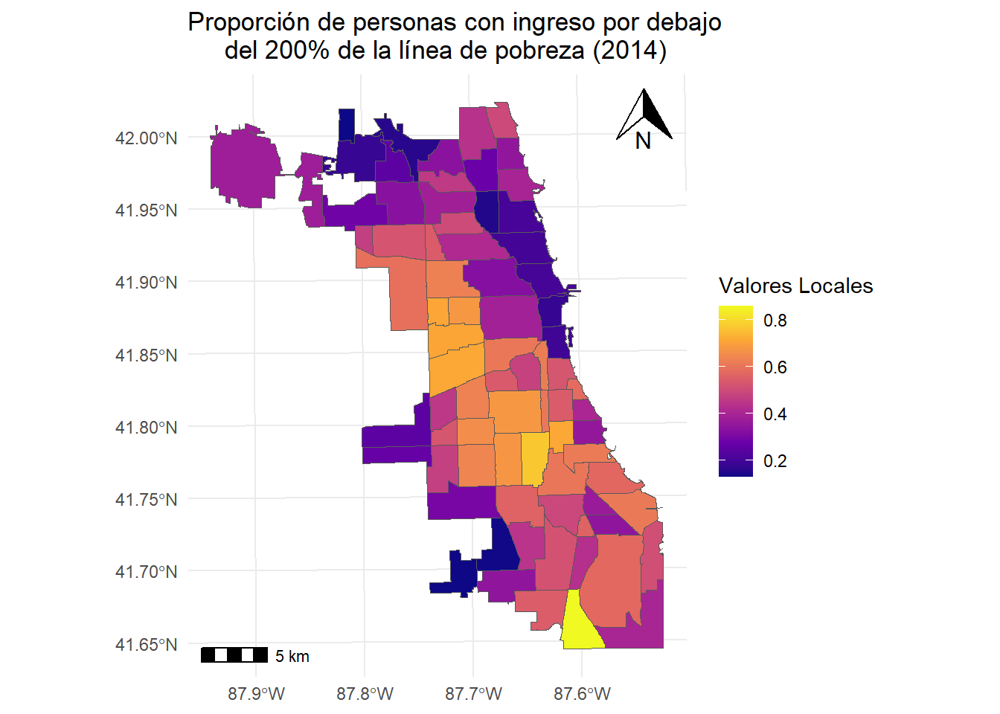
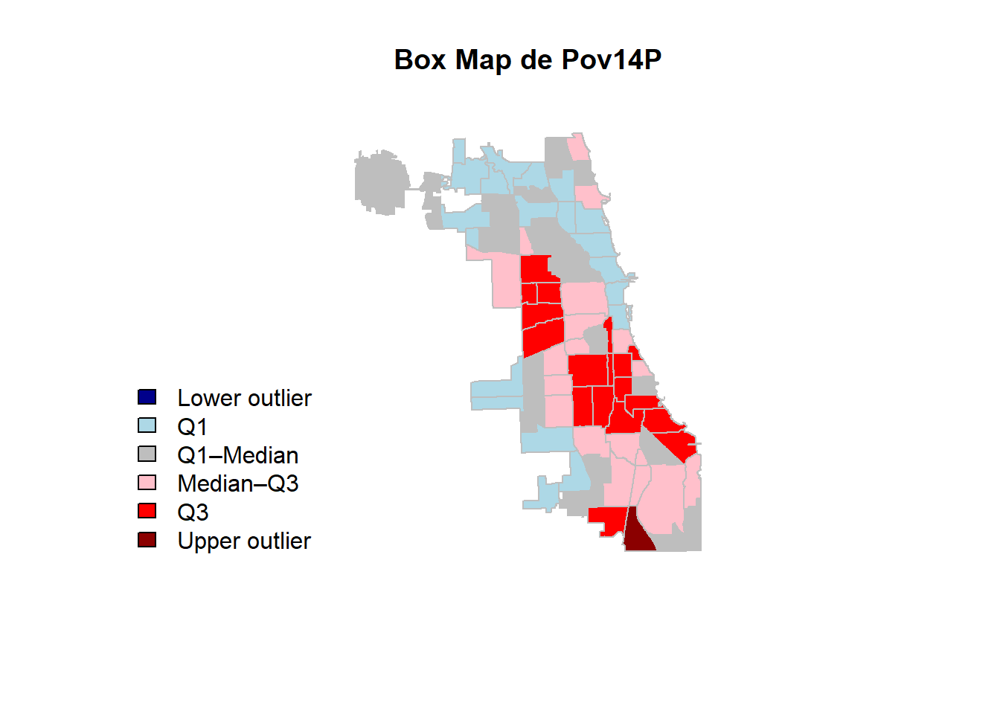
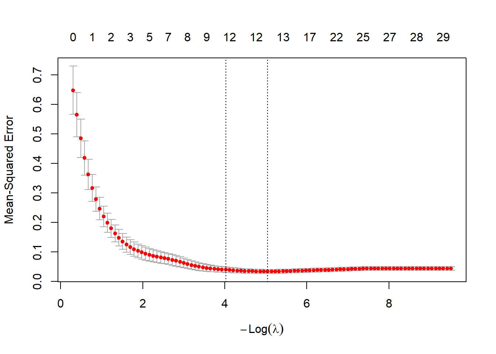

library(ppcor);library(car);library(lmtest)
library(foreign);library(dplyr);library(skedastic)
library(performance);library(nortest);library(glmnet)
library(GGally);library(betareg);library(ade4)
library(spdep) ;library(RANN);library(sp)
library(sf);library(tripack);library(RColorBrewer)
library(epitools);library(DCluster);library(MASS)
library(R2WinBUGS);library(dispmod);library(SpatialPack)
library(nlme);library(mgcv);library(CARBayes)
library(dbscan);library(mapview);library(spatialreg)
library(GISTools);library(psych);library(FactoClass)
library(GWmodel);library(viridis);library(mapsRinteractive)
library(ggspatial);library(SelectBoost.beta);library(simpleboot)
library(boot); library(plotly); library(corrplot)Modelación de la proporción de pobreza para 2014 en chicago utilizando regresión espacial
Anexo
En este apartado se incluyen códigos y procedimientos realizados antes de la presentación del modelo final. De esta forma, se presenta:
Análisis descriptivo.
Selección de variables:
Regularización Lasso para el modelo auxiliar normal.
Regularización Lasso para el modelo auxiliar beta.
Correlación y multicolinealidad.
Modelos auxiliares finales con verificación de supuestos distribucionales y de varianza.
Evaluación de correlación espacial y elección de la matriz \(W\) por medio del indice de Moran.
Formulación de modelos espaciales.
Comparación de métricas para selección del modelo de regresión final.
En este trabajo la data corresponde a la base Chicago Health and Socio-Economics (Center for Spatial Data Science, University of Chicago 2017), la cual contiene indicadores de salud pública y socio-económicos para las 77 áreas comunitarias de Chicago. Originalmente esta base incluye 86 variables y 77 observaciones, de las cuales se excluyen las variables de salud pública, debido a que solo se tienen sus valores para el año 2012.
Debido a que el objetivo del trabajo es el uso de un modelo espacial, se mantienen de las variables de pobreza únicamente Pov200P y ChldPov14 junto a la variable de interés , y asimismo se conservan las variables en forma de proporción, ya que, de no hacer esto, se pueden generar graves problemas de multicolinealidad.
La siguiente tabla recopila todas las variables tomadas en cuenta para la formulación del modelo:
TABLA
Las librerias utilizadas son:
La base de datos con todas las modificaciones mencionadas anteriormente es:
datos = read.dbf("C:/Users/laura/Downloads/comarea/ComArea_ACS14_f.dbf")
datos1 = datos %>% dplyr::select(-c(BirthRate,FertRate,LoBirthR,PrenScrn,PretBrth,
TeenBirth,Assault,BrstCancr,CancerAll,Colorect,
DiabetM,FirearmM,InfntMR,LungCancer,ProstateC,
Stroke,ChlBLLS,ChlLeadP,GonorrF,GonorrM,Tuberc,
PopM, PopF, Under5, Under18, Over18, Over21,
Over65, Wht14,Blk14, AI14, AS14, NHP14,
Oth14,Hisp14, Pov50, Pov125, Pov150,
Pov185, Pov200, field_37, Pop2012,
Property_C, Violent_C, Pov50P, Pov125P, Pov150P,
Pov185P, Pov14, COIave))
datosmod1 = datos1[-c(1:5)]
datosmod1$Pov14P <- datos$Pov14/datos$Pop2014
dfmod1 <- datosmod1[,-32] # Data que no incluye la variable de interésEs importante subir el archivo .shp y definir las coordenadas,pues este nos permite generar mapas y es necesario para el calculo de la matriz \(W\). De esta forma:
ComChicago = sf::read_sf("C:/Users/laura/Downloads/comarea/ComArea_ACS14_f.shp")
ComChicago = st_transform(ComChicago,CRS("+init=epsg:26971")) ## Con coordenadas de Chicago
ComChicago$Pov14P <- ComChicago$Pov14/ComChicago$Pop2014
datos$X = st_coordinates(st_centroid(ComChicago))[,1]
datos$Y = st_coordinates(st_centroid(ComChicago))[,2]
coords = st_coordinates(st_centroid(ComChicago))
xy0 = coords
trinb=tri2nb(xy0)Análisis descriptivo
Como se ha mencionado anteriormente en este trabajo se quiere modelar la proporción de pobreza en Chicago para el año 2014. Observe las medidas resumen y el gráfico de cajas y bigotes para la variable mencionada anteriormente:
plot_ly() %>%
add_trace(data = datosmod1,
x = ~Pov14P,
type = "box") %>%
layout(title = "Proporción de personas en pobreza en 2014 de Chicago",
xaxis = list(title = "Proporción de personas en pobreza"))| Min | Primer cuartil | Mediana | Media | Tercer cuartil | Max | Sd | Cv |
|---|---|---|---|---|---|---|---|
| 0.02447 | 0.14447 | 0.20953 | 0.23346 | 0.32857 | 0.62768 | 0.1228 | 0.5258 |
summary(datosmod1$Pov14P)
des = sd(datosmod1$Pov14P); des
cv = des/mean(datosmod1$Pov14P); cvDonde se detecta un valor atípico y un coeficiente de variación alto, que indica que los datos son heterogéneos, cosa que se debe tener en cuenta al momento de la formulación del modelo. A continuación se tiene una matriz de correlaciones, en la que se observan correlaciones perfectas entre PerCInc14 y ClgGrad14 y otras correlaciones fuertes que nos pueden indicar problemas de multicolinealidad.
corrplot(round(cor(datosmod1), 1), method="number", type="upper",
col = colorRampPalette(c("#85E3FF", "#85FFA1", "black"))(200))
Con respecto a la proporción de pobreza notamos una correlación especialmente alta con Pov200P, por lo que es interesante observar el mapa de valores de ambas variables, ya que si se llega a incluir en el modelo, se puede tener sobreajuste. De este modo vea que:
ggplot(ComChicago) +
geom_sf(aes(fill = Pov14P)) +
scale_fill_viridis_c(option='plasma') +
labs(fill = "Valores Locales") +
theme_minimal() +
ggtitle("Proporción de personas en pobreza (2014)") +
theme(legend.position = "right") +
annotation_scale(location = "bl", width_hint = 0.15) +
annotation_north_arrow(location = "tr", which_north = "true",
height = unit(1, "cm"), width = unit(1, "cm"))
ggplot(ComChicago) +
geom_sf(aes(fill = Pov200P/100)) +
scale_fill_viridis_c(option='plasma') +
labs(fill = "Valores Locales") +
theme_minimal() +
ggtitle("Proporción de personas con ingreso por debajo
del 200% de la línea de pobreza (2014)") +
theme(legend.position = "right") +
annotation_scale(location = "bl", width_hint = 0.15) +
annotation_north_arrow(location = "tr", which_north = "true",
height = unit(1, "cm"), width = unit(1, "cm"))
Donde se notan diferencias principalmente en las áreas comunitarias centrales de Chicago. Dado a que no se comportan espacialmente de igual forma, se decide mantener la variable. De manera final se incluye el boxmap por cuantiles de la variable de interés donde nuevamente se nota el valor atípico mencionado anteriormente.
x = ComChicago$Pov14P
q = quantile(x, probs = c(0.25, 0.5, 0.75), na.rm = TRUE)
iqr = IQR(x, na.rm = TRUE)
lower = q[1] - 1.5 * iqr
upper = q[3] + 1.5 * iqr
ComChicago$boxcat = cut(
x,
breaks = c(-Inf, lower, q[1], q[2], q[3], upper, Inf),
labels = c(
"Lower outlier",
"Q1",
"Q1–Median",
"Median–Q3",
"Q3",
"Upper outlier"
)
)
cols = c("darkblue", "lightblue", "gray", "pink", "red", "darkred")
plot(st_geometry(ComChicago),
col = cols[ComChicago$boxcat],
border = "grey",
main = "Box Map de Pov14P")
legend(
"bottomleft",
legend = levels(ComChicago$boxcat),
fill = cols,
bty = "n"
)
Es importante tener en cuenta que debido a la naturaleza de la proporción de pobreza, es decir, está en un intervalo de \(0\) a \(1\), modelarlo con un modelo de regresión normal usual no es recomendado. Sin embargo, (Salinas-Rodríguez 2006) menciona que una manera de acercarse a este problema es por medio de la consideración de una función de enlace diferente para el caso normal, en este caso, por medio de la función logit o mediante una regresión beta.
Selección de variables
Modelo Normal
Debido a la posible multicolinealidad de los datos, considerar como método de selección al stepwise no es recomendable. De tal forma se procederá a realizar este proceso mediante la regularización Lasso que incluye una penalización que fuerza que algunos coeficientes de los predictores tiendan a cero, este método especifica dos lambdas. el que minimiza el MCE y el que esta a una desviación estándar de este.
y <- log(datosmod1$Pov14P/(1-datosmod1$Pov14P)) #Función logit
dfmod1$y <- y
X = model.matrix(y ~ ., dfmod1)[, -1]
Y = dfmod1$y
set.seed(123)
cv_lasso = cv.glmnet(X,Y, alpha = 1)
plot(cv_lasso)
De esta forma las variables seleccionadas para el lambda que minimiza son:
Lassonorm <- lm(Pov14P ~ PopChng + Under5P + Under18P + Over65P +
Wht14P + Blk14P + NHP14P + Oth14P +
PropCrRt + NoHS14 + ClgGrad14 +
Pov200P , data = datosmod1)Modelo Beta
Para la selección de variables en el modelo beta se sugieren dos opciones. La primera de ellas es una regularización Lasso adaptada que considera que el modelo que se va a ajustar es beta, y la segundo de ellas es por medio del método SelectBoost explicado en (Aouadi et al. 2021) que por medio de la frecuencia de aparición en simulaciones del modelo se añade o no la variable.
El ultimo método suele ser sensible a alta multicolinealidad, fenómeno del que se tiene indicios que esta presente, por lo que solo se tomara la primera opción para la selección de las variables.
Lassobet <- betareg_glmnet(
X = model.matrix(Pov14P ~ ., datosmod1)[, -1],
Y = datosmod1$Pov14P
)De modo que las variables seleccionadas son:
Lassobet <- betareg::betareg(Pov14P ~ PopChng + Under5P + Under18P + Over21P + Over65P + Wht14P + Blk14P +
AI14P + NHP14P + Oth14P + PropCrRt + ChldPov14 + NoHS14 +
ClgGrad14 + Unemp14 + Pov200P,
data = datosmod1 , link = "logit")Correlación y multicolinealidad
Para cada uno de los conjuntos de variables elegidas se realizará un pairplot y se calculará el Factor de Inflación de Varianza (VIF) para determinar la multicolinealidad, es importante tener en cuenta que se reportaran correlaciones altas \((\rho > 0.7)\) y valores graves de multicolinealidad \((VIF > 10)\). El conjunto de variables seleccionado para cada uno de los métodos es:
Nota: Recordemos que el \(VIF_j = \frac{1}{1 - R^2_j}\), por lo que observar correlaciones altas pueden ser un indicio de un VIF alto (esta condición no es necesaria ni suficiente), y por tanto de multicolinealidad grave.
Modelo Normal
df1 = datosmod1 %>% dplyr::select(c(PopChng , Under5P , Under18P , Over65P ,
Wht14P , Blk14P , NHP14P , Oth14P ,
PropCrRt , NoHS14 , ClgGrad14 ,
Pov200P))Con respecto al pairplot se considera importante mencionar que la única correlación fuerte es:
- Wht14P - Blk14P: Con una correlación de \(-0.921\).
ggpairs(df1)
Evaluando el VIF se rectifica que si hay multicolinealidad grave, por lo que antes de evaluar supuestos en el modelo se debe corregir este problema.
vif(Lassonorm) PopChng Under5P Under18P Over65P Wht14P Blk14P NHP14P Oth14P
1.145064 1.604762 4.940607 2.550976 21.449779 23.792971 1.520549 4.534839
PropCrRt NoHS14 ClgGrad14 Pov200P
2.026783 2.199254 3.052471 4.936709 Modelo Beta
df2 = datosmod1 %>% dplyr::select(c(PopChng , Under5P , Under18P , Over21P , Over65P , Wht14P , Blk14P ,
AI14P , NHP14P , Oth14P , PropCrRt , ChldPov14 , NoHS14,
ClgGrad14 , Unemp14 , Pov200P))Con respecto al pairplot se considera importante mencionar algunas parejas con correlaciones altas son:
Over21P - Under18P y Pov200P - Over21P: Con una correlación de \(-0.970\) y \(-0.737\).
Wht14P - Blk14P: Con una correlación de \(-0.921\).
Unemp14 - ChldPov14: Con una correlación de \(0.835\).
ggpairs(df2)
Evaluando el VIF se rectifica que si hay multicolinealidad grave, por lo que antes de evaluar supuestos en el modelo se debe corregir este problema.
vif(Lassobet) PopChng Under5P Under18P Over21P Over65P Wht14P Blk14P AI14P
1.283819 1.843576 25.102410 31.907906 3.513455 18.890836 25.696617 1.396511
NHP14P Oth14P PropCrRt ChldPov14 NoHS14 ClgGrad14 Unemp14 Pov200P
1.614650 4.960458 2.268921 12.374672 10.127573 4.137886 6.576293 5.773048 Modelo auxiliar de regresión
Modelo Normal
Modelo Beta
Indice de Moran y matriz W
Modelo Normal
Modelo Beta
Modelos espaciales
Modelo Normal
Modelo Beta
Métricas de comparación
Aouadi, Ismaïl, Nicolas Jung, Frédéric Bertrand, et al. 2021. “selectBoost: A General Algorithm to Enhance the Performance of Variable Selection Methods.” Bioinformatics 37 (11): 1507–13. https://doi.org/10.1093/bioinformatics/btaa855.
Center for Spatial Data Science, University of Chicago. 2017. “Chicago Health and Socio-Economics: Community Area Variables.” 2017. https://geodacenter.github.io/data-and-lab/comarea_vars/.
Salinas-Rodríguez, Aarón. 2006. “Modelos de Regresión Para Variables Expresadas Como Proporciones.” Salud Pública de México 48 (5): 395–404. https://www.scielosp.org/pdf/spm/2006.v48n5/395-404/es.